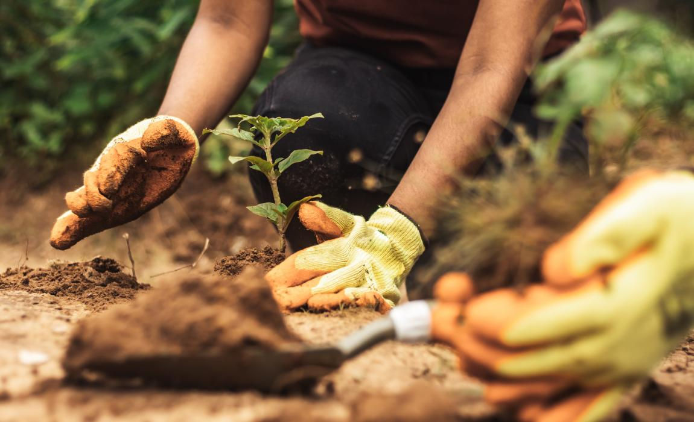
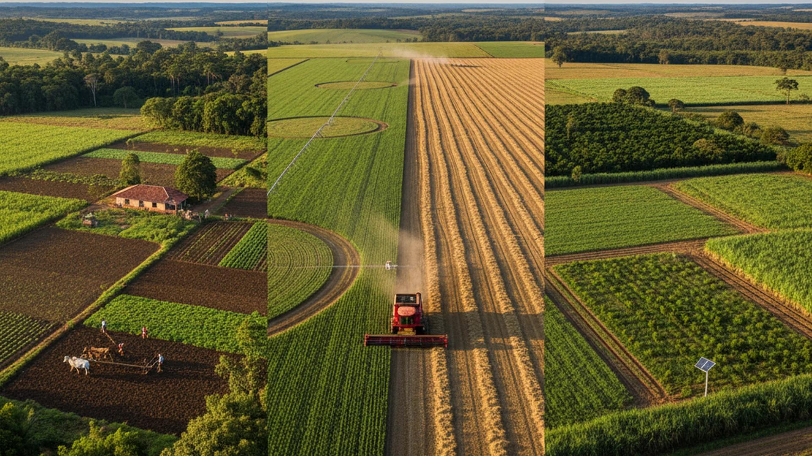
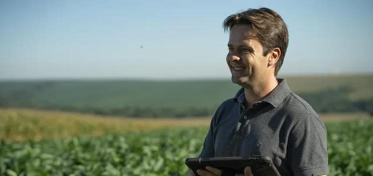

Responsável pelo abastecimento de alimentos e pelo crescimento da economia brasileira.
Preservação dos recursos naturais para garantir qualidade de vida às futuras gerações.
Inovação no campo para aumentar a produtividade e reduzir desperdícios.
O agronegócio é um dos principais setores da economia brasileira, responsável pela produção de alimentos, geração de empregos e desenvolvimento sustentável. Com o apoio da tecnologia e de práticas responsáveis, o agro contribui para alimentar milhões de pessoas e preservar os recursos naturais.
A produção agrícola é essencial para o fornecimento de alimentos e matérias-primas, fortalecendo a economia e garantindo o abastecimento da população.
O uso consciente dos recursos naturais ajuda a proteger o meio ambiente e a garantir a produção agrícola para as futuras gerações.
Máquinas modernas, drones e sistemas inteligentes tornam o campo mais eficiente, produtivo e sustentável.



O agro sustentável busca equilibrar desenvolvimento econômico, produção de alimentos e preservação ambiental. Dessa forma, garante recursos para as futuras gerações e promove uma sociedade mais consciente e responsável.